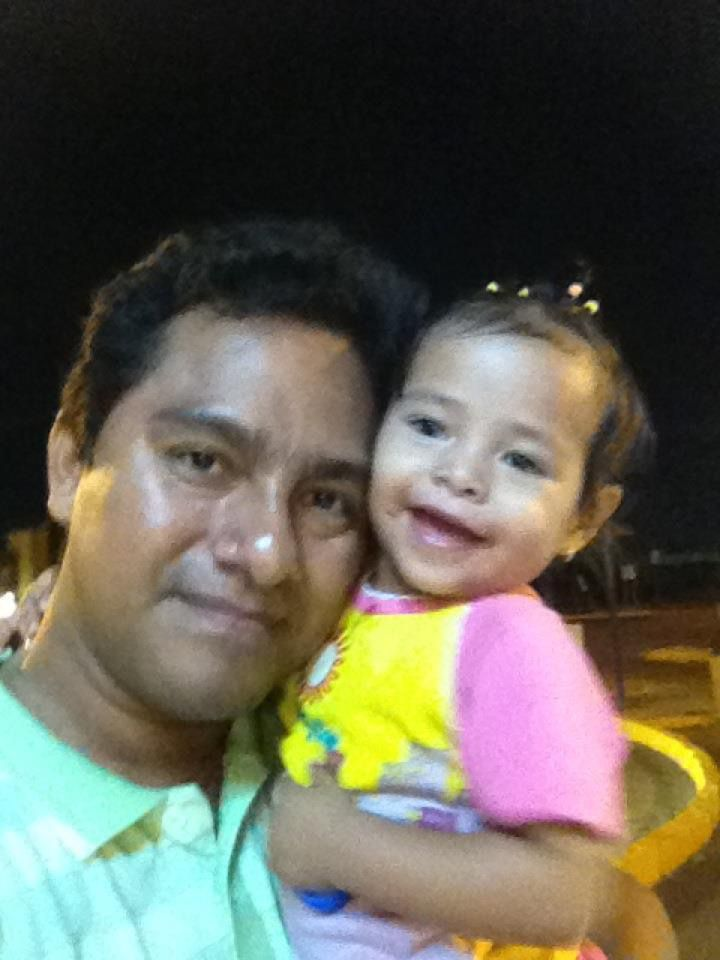

Hace quince años mis padres daban gracias a Dios por mí. Hoy doy gracias a Dios por ellos, por cuidarme y aconsejarme.

Hoy quiero que seas parte de esta memoria tan especial que siempre llevaré en mi corazón...
Sábado
09
Mayo 2026
Mis Padres
Benis Francisco Chan Jiménez
Ruth Yolanda Jiménez Torres
Mi Madrina de brindis
Mtra. Sandra Beatriz Hernández Jimenez

Tu presencia es muy importante para nosotros. Por favor confirma tu asistencia antes del 20 de abril.
Confirmar asistenciaAyúdanos a guardar los mejores momentos de la fiesta. Sube tus fotos a nuestra carpeta compartida.
Subir fotos
Formal
Evitar colores azules, están reservados para la quinceañera.
Espero contar con tu compañía para celebrar juntos este momento inolvidable.
Con cariño, Kamila Nahomy Chan Jimenez.